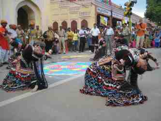
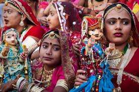
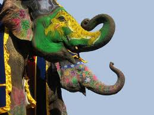
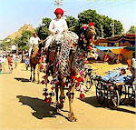
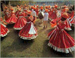
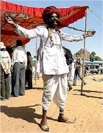

Jaipur-The Pink City
Fairs and Festivals

TEEJ
A festival dedicated to the worship of Shiva and Parvati. The married women pray for a long, happy marital life during the monsoon months of July-August. Though celebrations are held all over the state, they are particularly colorful in Jaipur where a procession wends its way through the heart of the old city. Women dress in their finery and spend time in groups at swings that are specially hung for the festival.Gangaur Fair
Idols of Issar and Gangaur, manifestations of Shiva and Parvati, are worshipped by women, particularly the unmarried ones pray for a consort of the like of Shiva. Celebrated all over Rajasthan, it has women taking out processions through the streets of towns, carrying images of the divine couple. The festival is especially colourful in Jaipur.


Elephant Festival
The festival is held on the eve of Holi in Jaipur and has several interesting attractions like elephant polo. The festival begins with a procession of elephants, camels, horses and folk dancers. The elephants are decorated to the full with bright colours, saddle cloth and heavy jewellery. Female elephant are made to wear anklets and a prize is given for the most well-decorated elephant. Playing Holi on elephant back is one of the major attractions.Camel Festival
The Camel Festival is organized by the Department of Tourism of the Rajasthan Government in January every year in Bikaner. The festival begins with a colorful procession of bedecked camels against the red sandstone backdrop of the Junagarh Fort. Held is a tug-of-war contest, best breed competition, camel dance and acrobatics among other things.


Mewar Festival
This 18 day festival is celebrated to welcome the advent of spring and coincides with the festival of Gangaur in Udaipur. It is significant for the women of the state as it is time for them to dress in their best. The women gather to dress the images of Issar and Gangaur and then carry them in a ceremonial procession through different parts of the city. The procession ends up at Pichhola Lake where the images are transferred to special boats amidst singing and festivityPushkar Fair
Easily the most identifiable of all the fairs of the state, the Pushkar fair is held in November in Pushkar in Ajmer, where an eighth century temple of Brahma, draws the faithful. The place has about 400 shrines and temples around the lake. Legend has it that Lord Brahma, in search of a place to hold his yagna (religious ritual), dropped the lotus from his hand and the three spots touched by the flower were turned into lakes. These are today known as the Jyeshtha Pushkar, Madhyam Pushkar and Kanishtha Pushkar
